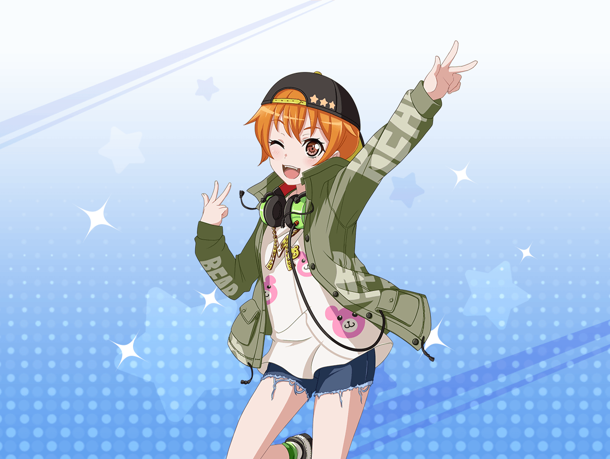

楽屋
はぐみ
みんな、今日は来てくれてありがとー！
クラスメイト
ううん、こっちこそライブ来れて良かった！
北沢さんって、ベースやってたんだね
はぐみ
そうだよ！ 前はギターは兄ちゃんに少し教わってたけど、
ベースもやり始めると弦が少ないのにすごく面白いんだ！
クラスメイト
ソフトボールもやってて、バンドもやってるなんてすごいよね
はぐみ
ソフトボールは身体動かすの好きだからやってて、
チームのみんなで協力するのが楽しいんだよ！
はぐみ
あ、でもバンドもソフトボールと少し似てて、
メンバーと音を合わせるから、
すっごくチームワークが大事なんだ！
クラスメイト
一人一人自由にやってるように見えたけど、違ってたんだね
はぐみ
演奏してると楽しいって気持ちがいっぱいになって、
自然と笑顔になっちゃうんだ。そうするとね、
演奏もいつの間にか１つになるんだ！
クラスメイト
ハロハピの演奏ってみてるこっちまで楽しくなっちゃって、
すごく良かったよ！
はぐみ
そっか！ 笑顔になってくれたならはぐみも嬉しい！
はぐみ
だってね、ハロハピはみんなを笑顔にするために
活動してるんだからね！
花音
はぐみちゃーん……あれ、はぐみちゃんのお友達？
はぐみ
あ、かのちゃん先輩！
クラスメイト
松原先輩、こんにちは！
先輩もハロハピのメンバーだったんですね。
ドラム、すごく良かったです！
花音
え、えへへ……そうかな？
そう言ってもらえると嬉しいな
はぐみ
かのちゃん先輩はすごいんだよ！
花音
そ、そんなこと急に言われると恥ずかしいよ。はぐみちゃん
クラスメイト
ハロハピのメンバーってすごく仲がいいんだね。
ちょっと羨ましい
はぐみ
そうだよ！ ハロハピのみんなはすっごく仲良しなんだ！
ね、かのちゃん先輩？
花音
うん。みんな性格は違ってるけど、仲良しかな
はぐみ
それにね、ハロハピのメンバーは、みーんなすごいんだから！
はぐみ
こころんはすっごくパワフルで元気でね！
だからね、みんなをいっつも引っ張ってくれるんだ
はぐみ
薫くんは演技がすごくて、本物の王子様みたい！
はぐみ
かのちゃん先輩はいつも一生懸命で、ドラムも上手でしょ！
はぐみ
それにDJのミッシェル！ みんなも見たでしょ？
クラスメイト
うん！ 着ぐるみがDJしてて、面白かったよ！
はぐみ
そっか！ ミッシェルもそれ聞いたら、すごい喜ぶと思う！
はぐみ
あ、それにみーくんも！
みーくんは一緒に演奏してるわけじゃないんだけどね
はぐみ
いつも曲を一緒に考えてくれたり、
ライブの会場を探してくれたりしてくれるんだ！
はぐみ
だからね、みーくんだって、
ハロハピのメンバーだよ！
はぐみ
かのちゃん先輩もそう思うよね？
花音
うん、そうだね。大切なメンバーだよ
はぐみ
だよねだよね！
みーくんともいつか同じステージに立てるといいなー！
花音
そ、そうだね……
花音
（美咲ちゃん、いつかミッシェルって
分かってもらえる日が来るといいな……）